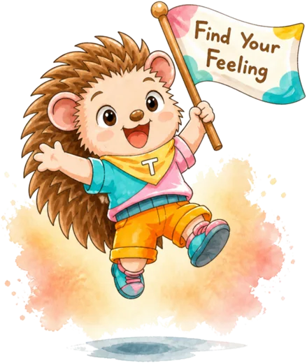

Find Your Feelings
HEALO with TEMU
Kenali stres dan trauma, cek gejala awal dengan PCL-5, ngobrol dengan TEMU, dan temukan bantuan profesional. Gratis, tanpa install, tanpa akun.

Empat fitur untuk menemani kamu
Edukasi PTSD
Bedanya stres sehari-hari, trauma, dan PTSD, dijelaskan dengan bahasa sederhana.
Skrining PCL-5
20 pertanyaan singkat untuk mengenali gejala awal. Hasilnya bukan diagnosis.
Tanya TEMU
Teman ngobrol AI untuk bertanya seputar perasaan, trauma, dan kesehatan mental.
Pusat Bantuan
Kontak guru BK, Puskesmas, psikolog, dan layanan krisis 24 jam.
Minta bantuan itu bukan tanda lemah
Banyak dari kita memilih memendam masalah sendiri. HEALO dibuat supaya kamu bisa belajar tentang perasaanmu secara pribadi, lalu tahu ke mana harus melangkah saat butuh dukungan.
Skrining di HEALO dihitung langsung di perangkatmu dan tidak disimpan di server.
Lihat Pusat Bantuan